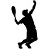

Venta accesorios Pádel
Como se indica en su nombre, estas palas destacan por su manejabilidad, precisión y control. Son excelentes para jugadores que prefieren tener un control total de la dirección de disparo y de la precisión de la pelota.
Las palas con un formato lágrima están más destinadas a la potencia. Son modelos que ofrecen un balance más superior que las redondas, por lo general son mas equilibradas, y en consecuencia ayudan a darle mayor pegada a nuestros golpes.